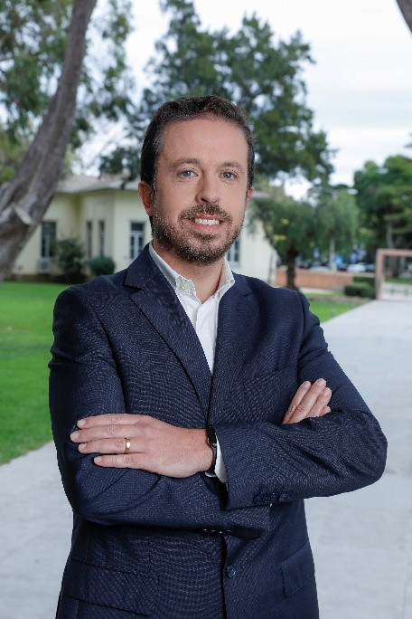
João Filipe Alves
Head of Security
João Filipe Alves is the Head of Security at National Regulatory Authority for Telecommunications (ANACOM) and Vice Chairman of Emergency Communications Planning Committee. Previously he was Head of Regulation, Supervision and Certification Department at the National Cybersecurity Centre (CNCS). During the Portuguese Presidency of the Council of the European Union, he was the Chair of the NIS Cooperation Group and Chair of the CyCLONe Network. He was the national representative in the European Union Cybersecurity Exercises project of the European Union Agency for Cybersecurity (ENISA) since 2010. He also was Software Engineer at Critical Software, Portugal Telecom and Siemens. He has a degree in Computer Engineering from the Faculty of Sciences of the University of Lisbon and a postgraduate degree in IT Security Engineer, also from the Faculty of Sciences of the University from Lisbon.

Sarah Ampe
Manager Digital Risk at EY and Core Member of the Quantum Circle
Sarah Ampe is a Manager in Digital Risk at EY and a core member of the Quantum Circle. With a background in mathematics, she helps organizations mature their cryptography practices by guiding them through industry best practices, automating their cryptography processes, and preparing for the challenges that quantum technology will bring. Sarah enjoys working with teams to build practical, quantum-secure strategies that protect their digital environments. In 2025, she was recognized as Young Cyber Professional of the Year by the Cyber Security Coalition. On top of that, Sarah is passionate about making the digital world more accessible for her local community.
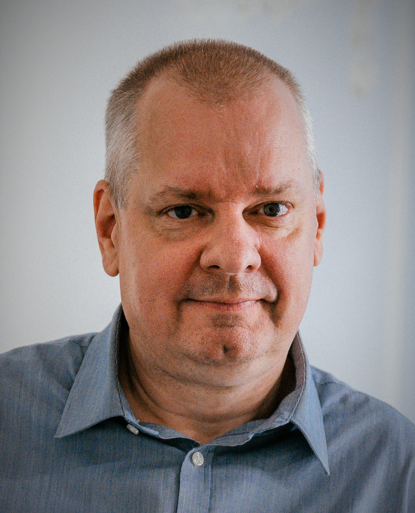
Dirk De Paepe
Senior Certification Expert
Dirk De Paepe is a Senior Cybersecurity Certification Expert at the Centre for Cybersecurity Belgium (CCB), supporting Belgian and European certification initiatives within the National Cybersecurity Certification Authority (NCCA).
As ISO/IEC 27001 Lead Implementer, Lead Auditor and trainer, and architect of the CyberFundamentals framework, he helps organisations strengthen their cyber maturity and close protection gaps.
Dirk provides expert input to European policy discussions and contributed to ENISA’s NIS2 Technical Implementation Guidance, helping translate EU requirements into practical implementation.
Before joining the CCB, he worked in the aerospace and defence sector, including as a Technical Officer in the Belgian Air Force.
His combined technical background, governance expertise and certification–accreditation experience make him a strong advocate for pragmatic, risk‑driven NIS2 implementation across sectors.
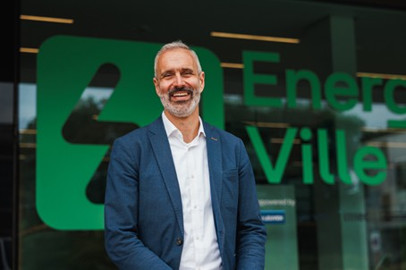
Bram De Wispelaere
General Manager EnergyVille
Bram De Wispelaere is General Manager of EnergyVille and has over 22 years of experience in the Belgian and European energy sector. His career spans engineering, energy companies, regulation, infrastructure management and government. He previously held senior roles at EDF Luminus, the Flemish energy regulator (VREG), Brussels Airport Company, and served as Deputy Chief of Staff to the Belgian Federal Minister of Energy, where he was responsible for market design, security of supply and crisis management during the energy crisis. He also serves as Chair of the Board of Directors of NIRAS. This cumulative experience led to his current role at the head of EnergyVille.
Dr. Marnix Dekker
Deputy Head of Unit for Resilience of Critical Sectors and Head of Sector NIS, ENISA, the EU Agency for Cybersecurity
Marnix Dekker leads a team of experts supporting the EU Member States with increasing the cybersecurity and resilience of the EU’s critical sectors. This is done by supporting the EU’s national authorities and cybersecurity agencies with the implementation of EU policies, such as the NIS2 and DORA, by supporting the NIS Cooperation group, the Union Risk Assessments, such as the EU 5G toolbox and the Nevers risk assessment. The focus is on building a horizontal NIS2 framework, as well as providing dedicated support to the most critical sectors, Telecoms, Digital Infrastructure, Energy, Finance, Transport and Health. In the past he was the deputy CISO of the European Commission, and before joining the EU institutions he worked as an IT architect for the Dutch national digital identity systems. Marnix has a Ph.D. degree in Computer security and a Master degree in Quantum Physics.
Karl Dobbelaere
Advisor Organisations of Vital Interest
Karl Dobbelaere is an advisor at the Belgian Centre for Cybersecurity (CCB), where he focuses on the cybersecurity of Organisations of Vital Interest, including entities covered by the NIS2 Directive. He coordinates the CCB’s CySSAP initiative, a forum bringing together sectoral authorities to support the implementation of NIS2.
At the European level, he contributes to the work of the NIS Cooperation Group, participating in the workstream on Cybersecurity Risk and Vulnerability Management as well as the workstream on Incident Reporting.
Furthermore, he has a particular interest in the evolving phishing landscape, from both a legal and policy perspective.
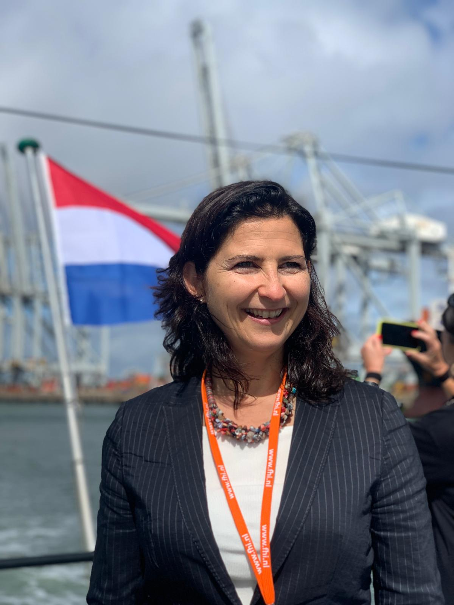
Holst Linda
Senior Cybersecurity Advisor
Linda Holst is a seasoned professional in the field of cybersecurity working for the Ministry of Infrastructure and Water Management at the Human Environment and Transport Inspectorate in the Supervision and Investigation Service department. Build on the foundation of her career at the Dutch military and at the Dutch police, she has more than 15 years professional experience in the area of digital protection of multiple critical infrastructure sectors, covering various strategic advisor, consulting and cyber inspection roles. Linda successfully graduated from 2 leading Universities and followed an International Executive MBA program in South-Africa and the United States of America. Next to her work she is an active reserve officer in the Dutch military.
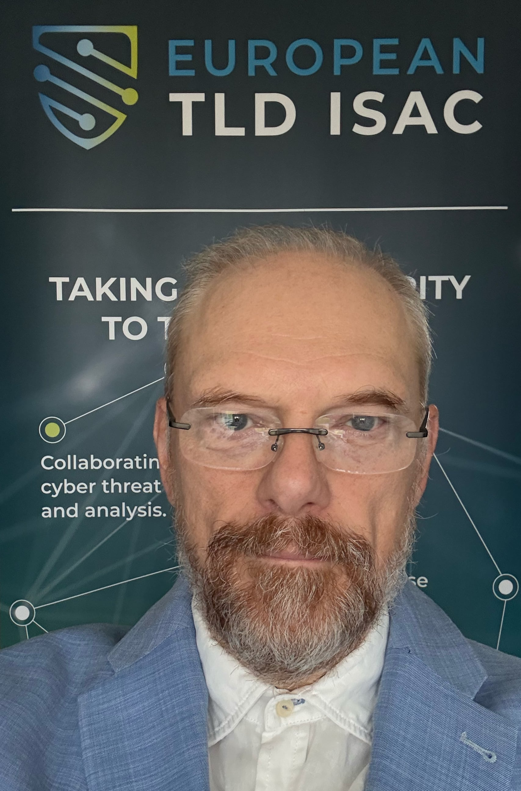
Dirk Jumpertz
Manager European TLD ISAC
Dirk Jumpertz is Manager of the European TLD ISAC, where he leads efforts to strengthen collaboration and trusted information sharing among top-level domain registries across Europe. Operating at the intersection of threat intelligence, operational security and resilience, and sector-wide coordination, he supports the DNS community in improving collective resilience against evolving cyber threats.
With a background in cybersecurity leadership and critical infrastructure protection, Dirk has extensive experience in risk management, IT & security operations, and building cooperative defence frameworks. He has been closely involved in the development of the TLD ISAC over the years, previously serving in key leadership roles and helping shape it into a trusted platform for information exchange within the European DNS ecosystem.
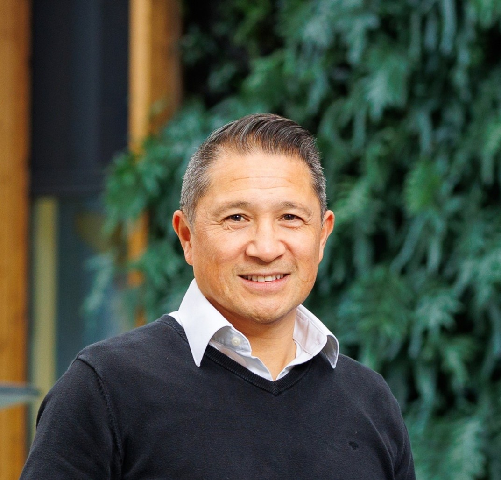
Johan Rambi
Cyber Security consultant
Johan Rambi is independent strategic cyber security consultant for board/senior management and specialized in development of IT/OT security posture with people, process and technology improvements. Furthermore Johan is an expert in setting up (international) public-private partnerships and trusted communities and was active in EU, Japan, US, Black sea and Balkan area. As co-founder, Johan launched the European Energy-ISAC (EE-ISAC) in 2015 to promote international collaboration and information sharing in the EU Energy sector. A special highlight for Johan and recognition of the EE-ISAC was the participation at the G7 Cyber Security Summit in Tokyo in 2017 and the signing of the MoU collaboration document in 2018 between the US E-ISAC, Japan E-ISAC and EE-ISAC to foster global information sharing in the Energy Sector. Johan is also founder of the Dutch Agrifood-ISAC, the Dutch EV Charging ISAC (EVC-ISAC) and Offshore Wind Taskforce as part of the EE-ISAC.
Ramsanjhal-Lala Danielle
Senior policymaker – Program manager Cyber Resilience
When you think of collaboration, you think of Daniëlle. With a degree in Cybercrime and Cybersecurity and a background in Criminology, Daniëlle is relatively new to the cybersecurity world.
She applies her knowledge of how to collaborate with the outside world on a complex societal issue, daily as a cyber resilience program manager. She coordinates the following sectors: chemistry, nuclear, waste management and satellite navigation within the Ministry of Infrastructure and Water Management. She doesn't do this alone, but together with her colleagues. Her motto is: Alone you can go far, but together you can go further! She'll be happy to tell you more about the cyber resilience program during the NISDUC days.
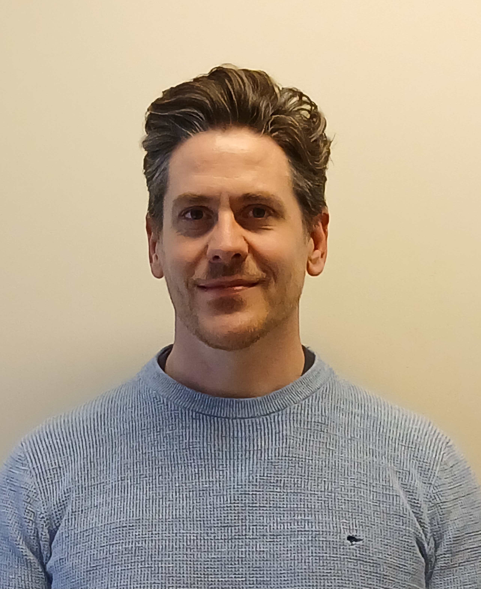
Ludovic Rigaux
Energy Security Officer
Ludovic Rigaux is Energy Security Officer within the Energy Directorate-General of the Federal Public Service Economy. He has a background in bioengineering and aeronautics, as well as professional experience in academic research and the transportation industry.
His current responsibilities focus on the resilience of critical entities and infrastructures in the Energy Sector, including on-site inspections, cyber-physical resilience assessments, stress tests, risk analysis, and more.
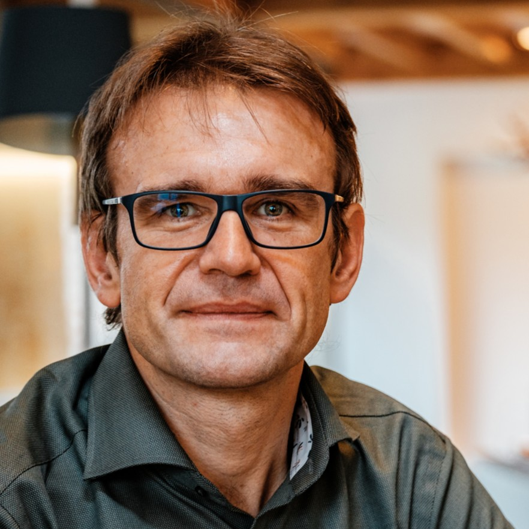
Tom Samyn
Community Manager at Beltug
Tom Samyn is Community Manager at Beltug, the Belgian association of CIOs and digital decision makers.
He brings over 30 years of IT experience across highly regulated sectors including banking, HR services, and healthcare, where he held senior roles in Enterprise Architecture and IT management.
Throughout his career, Tom has been closely involved in cybersecurity, large-scale IT transformations, compliance initiatives, and operational resilience in complex environments.
At Beltug, he drives community initiatives that enable members to exchange expertise on digital strategy, cybersecurity, innovation, and EU digital regulation, with a strong focus on practical implementation and peer learning.
He regularly hosts events on key digital themes, moderates expert panels and task forces, and acts as a facilitator between policy, technical experts, and practitioners, translating regulatory and technical complexity into actionable insights for CIOs, CISOs, and digital leaders.
Tinna Sigurðardóttir
Sigurðardóttir
Tinna is a cyber security expert with over 8 years of experience in the field. She has worked in threat research and malware detection, as well as countering hybrid threats. Currently, she is Iceland's secondment to the Hybrid CoE, where she works as a senior analyst.
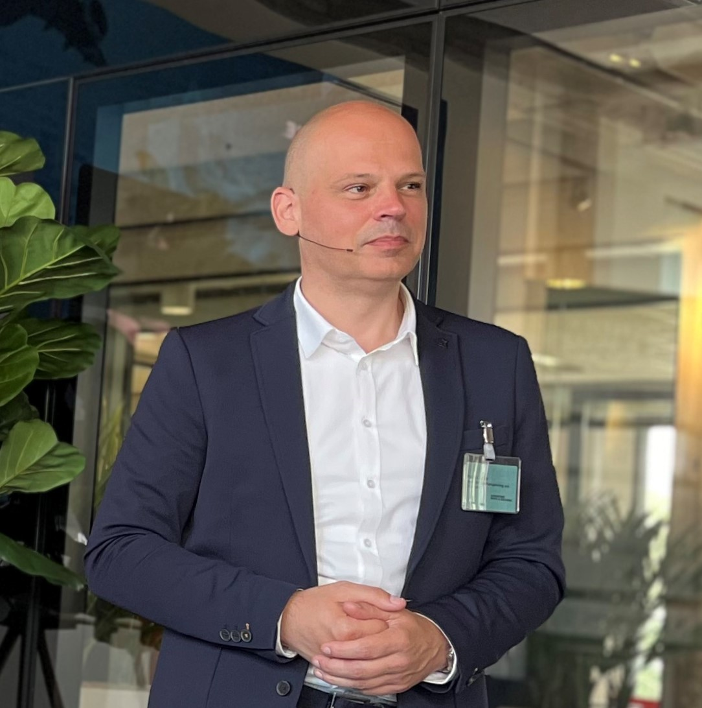
Spelt Patrick
Head of Cybersecurity Supervision
Patrick is currently serving as the Head of Cybersecurity Supervision at the Human Environment and Transport Inspectorate of the Ministry of Infrastructure and Water Management in the Netherlands. In this role, he is actively involved in enhancing supervision regarding cybersecurity measures within essential service providers across various vital infrastructure sectors including Maritime, Rail, Aviation, Drinking Water, and the main traffic network of the Netherlands. Prior to his current position, Patrick held significant roles in the private sector, notably as the IT Lead for Identity & Access Management at Rabobank, one the largest Dutch commercial banks. Patrick brings a wealth of experience in Information Security, IT leadership and risk management, making him a valuable asset in ensuring the robustness of cybersecurity measures within critical infrastructure sectors.
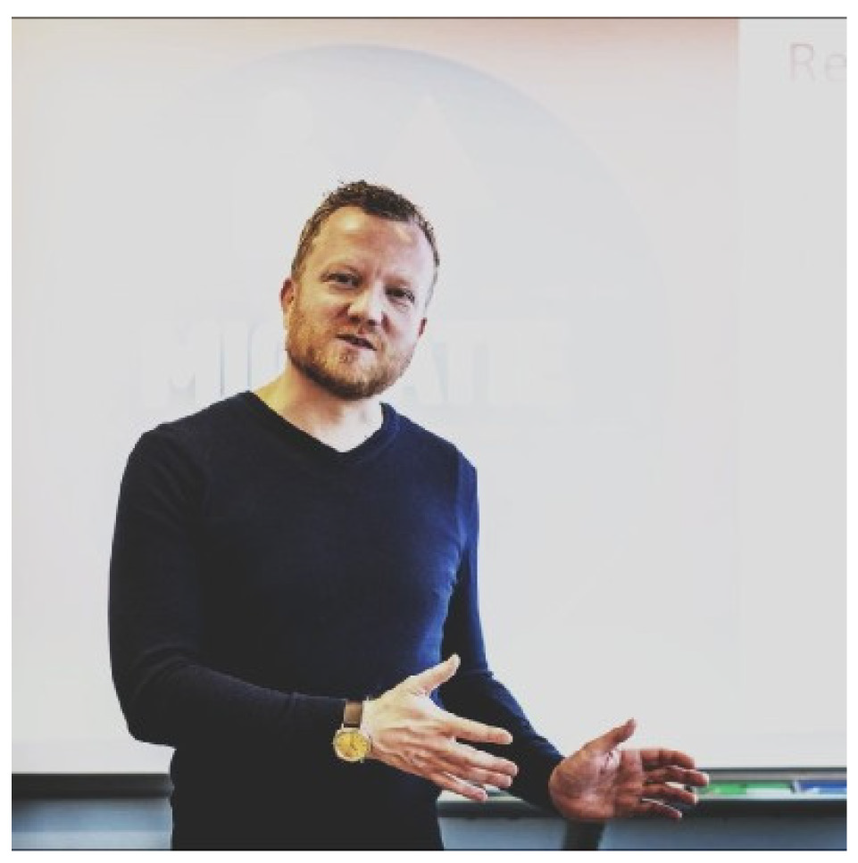
Cyril Springveld
Program lead/senior expert cyber security – Ministry of Infrastructure and Water management
I am a senior expert cyber security/program manager cyber resilience for aviation and maritime affairs with a strong sense for innovation and international cooperation. My current focus (since 2019) is on digital innovation and development of public/private strategies and projects to protect vital infrastructure from malicious influences.
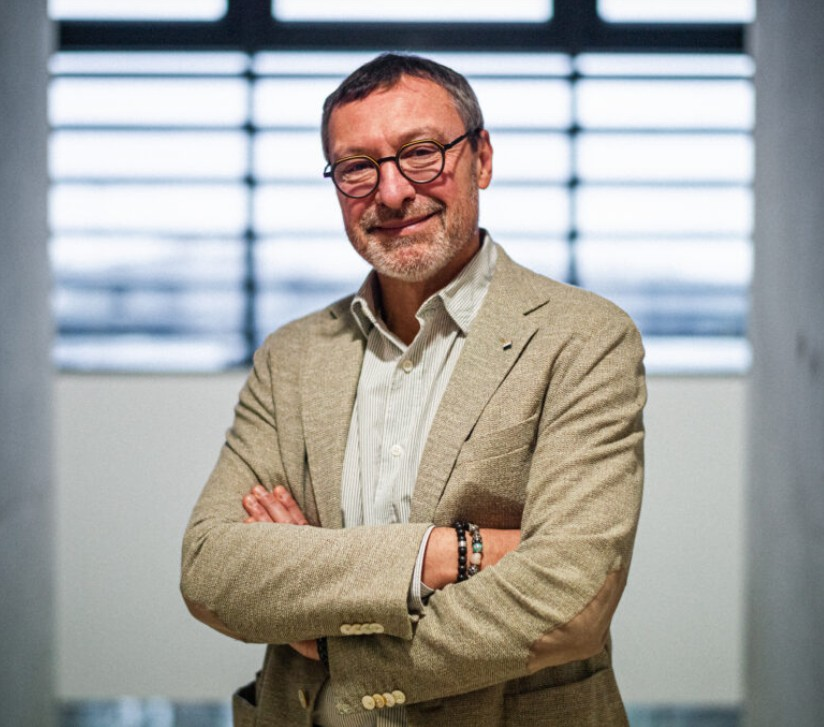
Jean-François Terminaux
Partner Manager – Disconnected Sovereign Cloud
With over 30 years of expertise in Luxembourg’s ICT sector, Jean-François Terminaux is a leading authority on telecommunications and sovereign cloud. Currently serving as Partner Manager for Disconnected Sovereign Cloud at Proximus Luxembourg, he specializes in the strategic positioning of complex infrastructure, with a particular focus on technological sovereignty and sovereign cloud solution like Clarence.
A central figure in the national ecosystem, Jean-François has served as Chairman of Finance & Technology Luxembourg (FTL) since 2017. In this role, he steers the evolution of tech services amid the financial sector's shifting regulatory landscape. He also chairs the "Data & Sovereignty" working group at ICT Luxembourg, leveraging his deep insights to drive digital transformation by balancing innovation with rigorous compliance and data governance.
Kristof Tuyteleers
CISO
Kristof Tuyteleers is Chief Information Security Officer at DNS Belgium, the Top-Level Domain registry for .be, .brussels, and .vlaanderen. He has been working in the internet industry for nearly three decades.
After 15 years in various engineering roles, he decided to specialise in information security management. He combines deep technical expertise with hands-on experience in crisis management, helping organisations translate frameworks such as NIS2 and ISO standards into practical capabilities that hold up in real-world scenarios.
Kristof has a passion for DNS security and never misses an opportunity to talk and present about it. He is the co-founder of the European TLD ISAC, a sectoral body for sharing cybersecurity threats, best practices, and incidents to enhance collective security. Kristof is also an active member of the Cyber Security Coalition and the BELTUG community in Belgium.
Yannick Van den Broeck
Expert Energy & Climate (Voka)
Yannick Van den Broeck is an Energy & Climate Expert at Voka’s Knowledge and Advocacy Center. Since April 2023, he has been monitoring Flemish and federal energy and climate policy and supporting companies in their energy transition. He also represents Voka in advisory bodies such as the Minaraad, SERV, and the Energy Policy Agreements Committee.
Yannick studied history at the University of Antwerp and subsequently built fourteen years of expertise within government and the energy sector. He served as parliamentary assistant to Matthias Diependaele, worked as a Hydrogen Project Manager at WaterstofNet, and later became Energy and Climate Policy Advisor in the cabinet of former Flemish Minister-President Jan Jambon.
Within Voka, Yannick actively contributes to the energy and climate debate by participating in strategic consultation platforms such as Klimaatsprong, Make2030, Elia’s stakeholder sounding board, Fluvius’ stakeholder consultation, and the Board of Directors of Flux50. He is involved in various projects and studies, including EnergieGRIP, and helps to shape a forward-looking and workable energy policy for companies in Flanders.
Frederik Vanhuysse
Senior policy advisor (Energy crisis management)
Frederik Vanhuysse is a senior policy advisor on energy crisis management at the Federal Public Service of Economy with a focus on electricity. Previously he worked on the national crisis plan for natural gas within the same organization. Before he was policy advisor hydrogen.
Frederik holds a master’s degree in sociology.
André de Groot
Policy Advisor De Nederlandsche Bank
As policy advisor at De Nederlandsche Bank (DNB) I am primarily involved in Technology related policy files. Recent files are DORA, FIDA & NIS2. Besides that, I am involved in work on Digital Dependency in the Financial Sector. Last October DNB and AFM published a report on this topic.
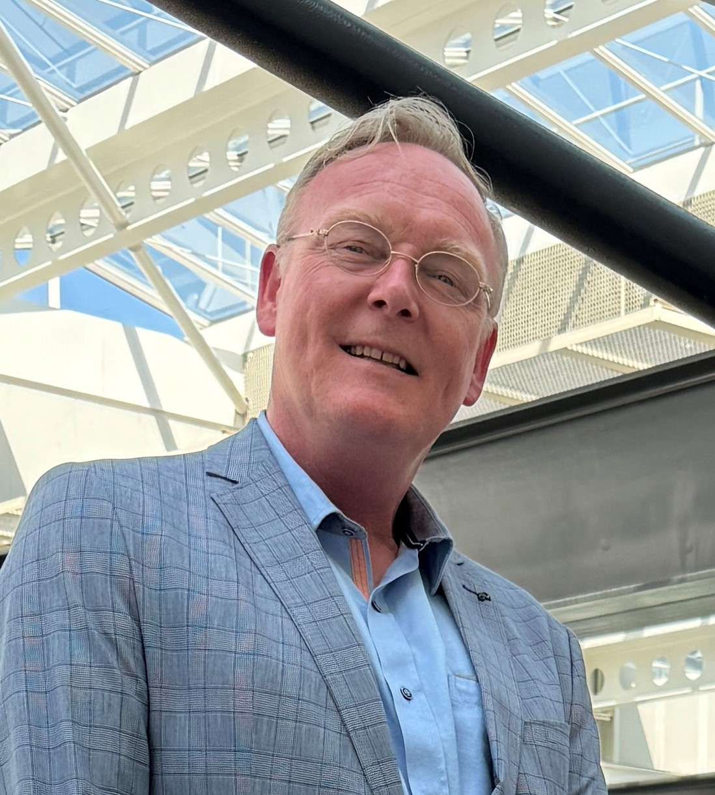
Patrick van de Heisteeg
Coordinating Special Advisor for Cybersecurity Supervision at the Human Environment and Transport Inspectorate (ILT)
Patrick van de Heisteeg is a specialist in permits, supervision, and enforcement of environmental laws and works as a coordinating special advisor for cybersecurity supervision at the Human Environment and Transport Inspectorate (ILT). Previously, he worked as a senior policy advisor for Maritime Safety at the Directorate-General for Maritime Affairs of the Ministry of Infrastructure and Water Management. The ILT is the designated supervisory authority for the NIS2 and CER for the Transport sectors (Seaports, Railways, Road Transport, Aviation, and Public Transport) and the Drinking Water, Chemicals, Waste Management, and Wastewater Management sectors. Patrick is particularly interested in collaboration, mapping various legislation, and efficient supervision that contributes to good governance and the resilience of the Netherlands as a whole.